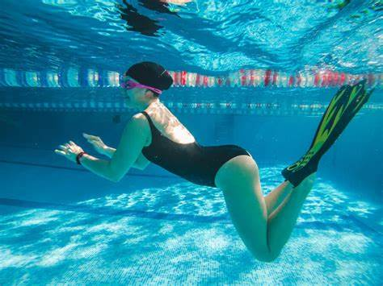
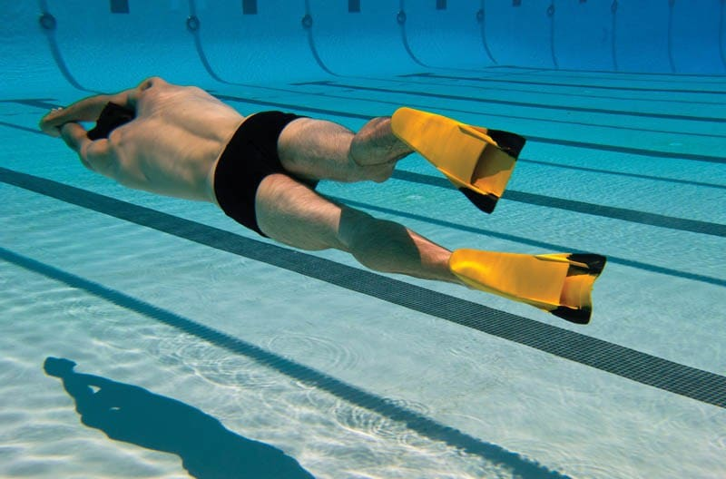

La natación con aletas (en inglés: finswimming), también conocida como natación subacuática, es una disciplina de las actividades subacuáticas en la que los deportistas se desplazan en la superficie del agua o totalmente sumergidos usando un par de aletas o una monoaleta,3 movidas únicamente por su fuerza muscular.4 El organismo internacional que regula esta actividad es la Confederación Mundial de Actividades Subacuáticas (CMAS). En la natación con aletas se alcanzan velocidades hasta un 50% más altas que en la natación convencional.
Esta es una de las actividades acuáticas con más personas ya que les llama la atención aprender a nadar con aletas y a desarrollar nuevas habilidades realizando esta actividad, contamos con las mejores instalaciones.
